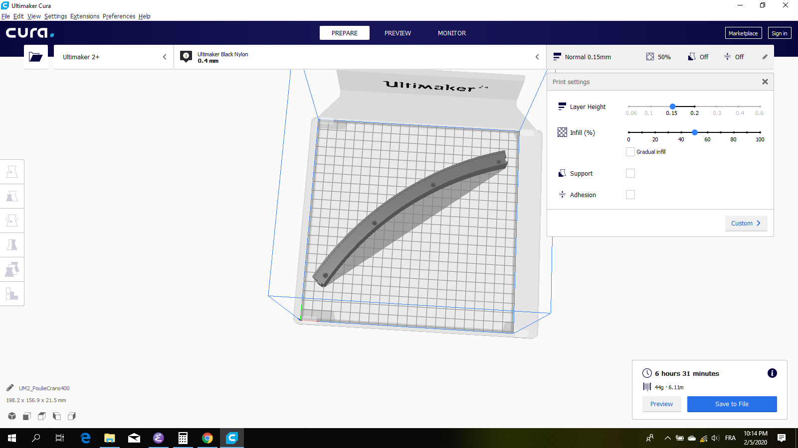

Mes Projets¶
eBike¶
Partie Mécanique¶
Poulie Crantée Imprimée¶
Version A¶
Matière : PLA Imprimée en 3D Nbre de dents : 400 dents
Version B¶
Fabrication poulie en PLA¶
{kind=link}
La poulie sera d’un diamètre plus grand par rapport au modèle précédent. Ceci est possible grâce à la roue dotée de frein à disque. En effet, les freins “patins” en caoutchouc ne permettait pas à fixer la poulie directement sur la surface de freinage. Un diamètre plus grand de la nouvelle poulie en plastique, permettra, en conservant le même rapport de transmission, une poulie moteur plus grande. Cela impliquera moins de courbure de la courroie et améliorera ainsi la durée de vie et un meilleur roulement donc moins de bruit, je pense. (il s’est avéré après montage, que la courroie est juste assez longue pour la nouvelle poulie et ne laissait plus de marge à prendre une poulie moteur plus grande)
Calculs préliminaires¶
Détermination du diamètre de la roue arrière et du diamètre de l’ancienne poulie déjà imprimée. Cette opération sert à déterminer le facteur de rétrécissement du plastique. On appliquera ce facteur lors de la modélisation de la nouvelle poulie sur le diamètre de l’épaulement de centrage.
Mesures
Mesuré avec bande de papier largeur 30mm.
circonférence roue vélo : 1990mm circonférence poulie crantée plastique : 1916mm
Calcul diamètres
diamètre roue vélo : 1990/3.14 = 633.8mm diamètre poulie crantée plastique : 1916/3.14 = 610.2mm
Calcul du facteur de rétrécissement
diamètre du modèle = 612.1mm
facteur = 610.2/612.1 = 0.996
Calcul du diamètre de l’épaulement de centrage avec facteur de rétrécissement
633.8/0.996 = 636.3mm
On constate qu’il faudra rajouter 2.5mm au diamètre de l’épaulement de centrage.
ajoutons encore un jeux de 0.5mm -> 636.8mm
Résultats¶
1er essai
Après avoir fait tous les segments et emboité tous ces derniers pour former la couronne entière, on constate un jeux d’environ 2mm entre la roue et l’épaulement de centrage. (sur le rayon).
calculons le nouveau diamètre de centrage :
nous avions 636.8mm enlevons 4mm au diamètre ce qui fait 632.8mm
2ème essai
Après avoir réimprimé une poulie entière avec 4mm de moins sur le diamètre, le deuxième essai à l’air d’être ok. Un léger jeux persiste mais est minime. Pour le pointage on calera avec du scotch de carrrosier jusqu’à ce que la poulie ne présente plus de jeux. Pour ma roue j’ai utiliser deux couches de scotch de carrossier. (bande de 2cm deux par segment)
Montage de la poulie sur la roue¶
Pointage
Warning
Il faut placer la poulie en quinquonce sur la jonction de la jante forgée. Car au niveau de la jonction il y une grande épaisseur de matière, donc impossible à vis les vis à cet endroit là.
Serrer avec 4 clamps (4 x 90degrés). Pour le pointage il faut prendre une mêche à centrer diam. 3.5mm. Attention avec le frottement la mêche à centrer chauffe et fait fondre le plastique.
Perçage
Utiliser une mêche de diamètre 2.7mm (2.5mm trop petit j’ai cassé une vis en la serrant trop fort)
Fixation¶
Les têtes de vis ont touchés le cadre du vélo. J’ai dû faire des lamages profondeur 1.5mm pour noyer la tête de la vis. Je pense que si c’était à refaire, il faut faire des lamages de 2mm (impression 3D) et utiliser des vis inox diam 3.5 lg 22mm.
{kind=link}
{kind=link}
Fixation Moteur¶
C’est un L plié en aluminium d’épaisseur 3mm avec deux tôles d’épaisseur 2mm soudés sur les cotés pour rigidifier le tout.
Clavette¶
Elle a pour but de garantir l’alignement de la poulie du moteur par rapport à la poulie de la roue. Elle facilite le montage - démontage car la clavette n’a pratiquement pas de jeux. Elle est goupillée à la Fixation Moteur à l’aide de deux Goupilles.
Rondelle Epaisse Moteur¶
Cette rondelle a pour but de bien plaquer la Fixation Moteur Elle fait 5mm d’épaisseur
Cache¶
Cette partie protège le moteur des éclaboussures. C’est une tôle pliée d’épaisseur de 1mm et juste collé avec du mastique.
Courroie Crantée¶
GT3 5mm 2100mm de longueur, 9mm de largeur Achetée chez Uiker
Tendeur Courroie¶
Il a pour but de tendre la Courroie Crantée et d’augmenter le nombre de dents engagés sur la Poulie Tendeur. Il ne peut y avoir un ressort, car sinon lors de freinage électrique cela provoquerait des problèmes.
Composé de deux Leviers Tendeur, d’une Poulie Tendeur en nylon (imprimée en 3D), d’un Axe Poulie Tendeur, de deux Entretoises 15mm et de Visserie
Levier Tendeur¶
Découpé à l’aide d’une scie sauteuse. Muni d’un oblong qui sert à tendre la Courroie Crantée
Poulie Tendeur¶
Imprimée en 3D et munie de deux Roulements Tendeur
Diamètre 38mm Matière : nylon Diamètre intérieur : …
Roulement Tendeur¶
6…RS Acheté chez Uiker
Axe Poulie Tendeur¶
C’est une vis sans tête M6 à six-pans creux. (à vérifier si possible de prendre une vis)
Visserie¶
2x Vis M6 inox à 6pans creux lg = …
3x Ecrou M6 inox
3x Rondelles M6
Entretoise 15mm¶
Matière : aluminium
Partie Electrique¶
Boîtier Electrique¶
Il est imprimé en 3D en PLA.
Comprend : - le Régulateur de Vitesse VESC 6 - la Plaque de Connexion - la
Mettre l’Intérupteur Anti-étincelle sur la face de dessous (percer le Support Bloc Batterie / Boîtier Electrique). En le mettant à cet endroit, cela va le protéger de la pluie et le cachera des regards.
Plaque de Connexion Femelle¶
La fonctionnalité de cette plaque est de connecter le Bloc de Batteries à la Plaque de Connexion Femelle. Imprimée en 3d PLA, elle est munie de 4 connecteurs XT30 femelle encastrés. Il est important que ces derniers soient encastrés car cela permet de gagner de la place dans le Bloc de Batteries.
Presse-Etoupe¶
Garantit l’étanchéité des câbles de la Poignée de Gas et de la Levier de Freinage
Goupilles en Carbone¶
Elles tiennent les Connecteurs XT30 dans la Plaque de Connexion Femelle
Plaque de refroidissement VESC¶
Cette plaque a pour but de refroidir le Régulateur de Vitesse VESC 6 par dissipation thermique.
Visserie¶
vis à tôle 2.9mm lg 13mm inox
vis à tôle 2.9mm lg 19mm inox
Régulateur de Vitesse VESC 6¶
Acheté chez https://Trampaboards.com C’est je pense à ce jour, le plus abouti des régulateurs. Voici en grande ligne ces caractéristiques :
conçu pour les véhicules électriques en tous genres
permet le démarrage à vitesse 0 avec Sensored Motor ou Sensorless Motor (grâce à la technologie HFI : High Frequency Induction)
permet la re-génération lors du freinage
un boîtier en aluminium entoure l’électronique ce qui permet de facilement le fixer sur une plus grande plaque en alu pour le refroidir
une application mobile VESC Mobile a été faite pour le configurer et pour l’affichage d’une multitude de mesures en temps réelle. La communication se fait sans fil NRF BLE (Bluetooth Low Energy)
12s (60V)
80A en continu
150A Max
VESC Connect NRF Wireless Dongle¶
Acheté chez https://trampaboards.com Permet la communication entre un mobile (smartphone) et le régulateur (configuration et affichage des mesures en temps réelle)
Intérupteur Anti-étincelle¶
C’est l’intérupteur principal. (relais statique) Il évite les surtensions dû aux inductances des circuits électriques. Acheté chez FLIPSKY (flipsky.net) Anti spark Switch Smart Enhanced 200A for Electric Skateboard /Ebike/ Scooter/Robots
Poignée de Gaz¶
Levier de Freinage¶
Câblage¶
Câble JST-PH 2mm pich¶
Ce câble permet d’utiliser la Poignée de Gas et la Poignée de Frein sur le même connecteur livré avec VESC Connect NRF Wireless Dongle. En effet ce dernier qui a une fiche femelle 8pôles, n’a pas de câble sur adc1 et adc2.
Acheté chez Conrad avec les références suivantes :
748475 Connecteur femelle avec fils 808935 x1
Bloc de Batteries¶
Version A¶
La fonction de cet élément est de tenir et de protéger les 4 Batteries Lipo 6s 6000mAh Il possède une Plaque de Connexion Mâle, munie de 4 Connecteurs XT30 Mâle.
Fabriqué avec une imprimante 3D. Il contient les 4 Batteries Lipo 6s 6000mAh, dont deux jeux de batteries en série branchées en parallèle. Ce qui génère une tension de 42V et une capacité de 12Ah ou 540Wh (ça déchirre quoi!)
{kind=link}
Couplage Batterie¶
Cette pièce sert à maintenir les Connecteur XT30 Femelle ainsi que le Connecteur DB-37 femelle qui sont reliés aux 4 Batteries Lipo 6s 6000mAh.
Méthode pour connecter les Batteries aux différents connecteur¶
on perce les trous dans les 4 Connecteur XT-30 Femelle avec une mêche de 1mm en prenant le Couplage Batterie comme office de gabarit de perçage (il faudrait avoir une mêche spécialement longue pour cette opération, mais si l’on tourne la mêche avec une pince cela fait moins mal aux doigts)
on coupe à raz les fils d’équilabrage des tensions
on met une gaine thermo de diamètre 2mm intérieur et de longueur 6mm
on dénude et on soude
on isole avec la gaine thermo préalablement enfilée, la partie soudée
on répète ceci pour toutes les 4 Batteries
on coupe le gros conducteur ici sur du 12awg à raz le connecteur XT-60
on dénude à 40mm
on enlève deux torons (on en garde 6 sur 8)
à l’extrémité, on garde 1.5 toron sur 8mm (c’est le bon diamètre pour l’enfiler dans le Connecteur XT-30 Femelle
on passe une gaine thermo de 40mm et la passe par dessus la grosse isolation en silicone du gros cable de la batterie tout en laissans dépasser les 1.5 torons de 8mm.
on serre la gaine au foehn industriel
on passe une gaine thermo de longueur de 12mm sur les 6 torons
on passe dans le Couplage Batterie
on soude sur le Connecteur XT-30 Femmelle
on passe la gaine thermo de 12mm de longueur sur la partie soudée et on la serre au foehn industriel
Batteries Lipo 6s 6000mAh¶
Achetée chez Aliexpress 6S 6000mAh 30C poids 940g dimensions : 158x48x56mm
Plaque de Connexion Mâle¶
Imprimée en 3D PLA, avec 4 Connecteurs XT30 Mâle qui sont logés dans cette dernière et tenus par des Goupilles en Carbone
Goupilles en Carbone¶
Elles tiennent les Connecteurs XT30 dans la Plaque de Connexion Mâle
Connecteurs XT-30¶
Permet le branchement du Bloc Batterie au Boîtier Electrique, un critère important d’avoir choisi ce type de connecteur est qu’il est petit et résiste à des courants de 30A en continu. Si la température du connecteur n’excède pas 80degrés, il peut passez des courants au-delà des 30A. Grâce à sa petite taille, il se débranche / branche sans trop d’effort. Ceci est important, car 4 connecteurs se brancheront / débrancheront en même temps lors du retrait / mise en place du Bloc de Batteries, donc il faut que la friction des connecteurs soit le plus faible possible. Du fait que les batteries sont en parallèle, le courant max en continu total sera de 2x30A = 60A. Ce qui représente déjà une bonne puissance en continu (60 x 42 = 2520W) Bien sûr des pics pourront être possible lors de fortes pentes mais ne dureront pas bien longtemps.
Cosses en cuivre¶
Fixation Bloc de Batteries / Boîtier Electrique¶
Conçue en fibre de carbone, elle a pour but de tenir le Bloc de Batteries et le Boîtier Electrique sur le cadre du vélo. Elle possède un Système de Fermeture Anti-vole
Système de Fermeture Anti-vole¶
Il retient le Bloc de Batterie sur le Boîtier Electrique. Il est doté de deux Plaques Latérale, d’une Plaque de Maintien, d’un Tube-Goupille et d’un Cadena pour la fermeture à clé.
Plaques Latérales¶
Elles sont collée sur la Fixation Bloc de Batteries / Boîtier Electrique et permettent d’y insérer le Tube - Goupille
Plaque de Maintien¶
Elle maintient le Bloc de Batterie sur la Fixation Bloc de Batteries. Elle empêche le Bloc de Batterie d’aller vers le haut.
Tube-Goupille¶
Il retient la Plaque de Maintien et sert pour la fermeture à clé. Il est en aluminium.
Cadena¶
Celui-ci sera le plus petit possible et muni d’un clé.
Vis M5 Inox à Tête Conique¶
Elle servent à visser la Fixation du Bloc de Batterie / Boîtier Electrique au cadre du vélo à la place du porte-gourde.
Paramètrages¶
Avant utilisaton, il faut configurer le régulateur VESC (puissance, batteries, …)
Contrôleur de tension¶
Ce dispositif sert à mesurer chaque cellule du Bloc Batterie. C’est-à-dire 4 * 6 = 24 cellules. Les batteries LiPo sont très vulnérables. Si l’on sort de la plage de tension qui est de 2.7 à 4.2 V, on risque à coup sûr de l’endommager. C’est pourquoi un Contrôleur de tension à été construit. Il est muni de 4 circuits électroniques standard (possibilité de mesure 1S à 8S). Dès que l’on descends en dessous des 2.7V alors un bip assourdissant retentit qui indique la décharge complète d’une cellule. L’avantage d’avoir ce dispositif et que l’on peut vraiment aller jusqu’à la décharge complète de la batterie sans avoir à se préoccuper d’endommager la batterie. Sans cet artifice, il faut mettre une marge aux 2.7V pour être sûr qu’aucune cellule ne passe pas en dessous des 2.7V, car chaque cellule ne se décharge pas de la même vitesse. Donc une plus grande autonomie de la batterie sans risque de l’endommager.
Cet élément est fixé sur la tige de la selle et peut être enlever très facilement pour ne pas se le faire voler. Comme l’affichage de la tension de chaque cellule est faite par des indicateurs 7 segments, on utilisera la lumière émise par ce dernier pour en faire un phare arrière. Donc une pierre deux coups!